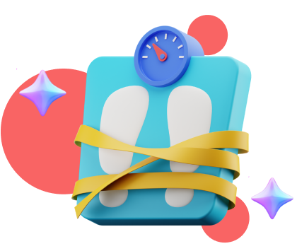
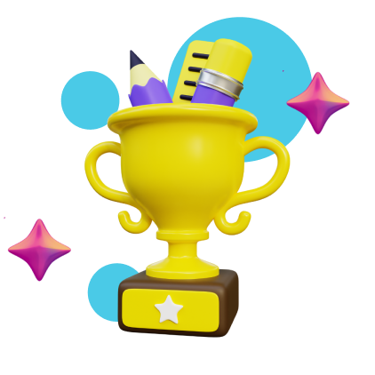
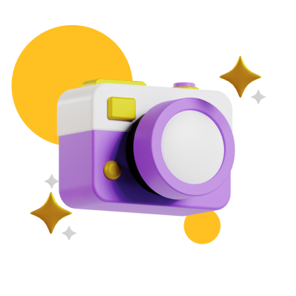
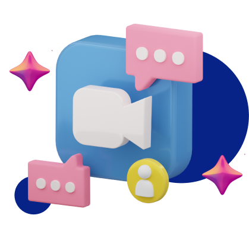

Ah! Happy to have you among us.
Have a sneak peek into everything we are up to!
Academics
Make the most out of that mandatory curriculum!
We visualize and analyze patterns in their grades across different subjects and examinations.
Gain valuable insights into the average grades scored in specific subjects among their classmates.
Store digital report cards conveniently and access them anytime, anywhere.
We empower parents with data-driven decision-making tools to support their child's academic journey.

Health
Your child's well-being is a treasured possession.
Delve into the Health Module's cutting-edge capabilities, capturing vital health data of children.
Witness the magic as it calculates their BMI and compares it to globally recognized WHO standards.
Keep yourself informed through personalized alerts, warning about potential unhealthy BMI in the near future.
Embark on a thrilling journey of proactive well-being, where data-driven insights pave the way to a healthier future.
Co-curricular
Expand your child’s horizons.
With our holistic Co-curricular module, you get the best chance to ignite their passion and unleash their true potential!
Help your child discover a world where learning goes beyond the classroom walls.
Using our super fun brownie points system, recognize your child's accomplishments and reward them.
More the accomplishments, more the brownie points, more the rewards!


Memories
Happiness is laughing at old childhood photos.
Immerse yourself in the Memories Module, a revolutionary way to capture and cherish precious moments in your child's life.
Create a captivating timeline of their growth, preserving memories in a delightful candy crush timeline format.
Organize photos effortlessly into smart collections, making it easy to relive moments by themes like toys, festivals, and birthdays.
Safeguard memories with encrypted storage, ensuring their safety and accessibility for years to come.
Webinars
Take an interactive approach to learning important life skills.
Jump headfirst with our Webinars, where knowledge is the key to unlocking your child's boundless potential.
Early exposure to essential life skills can pave the way for kids becoming street smart.
Our carefully curated webinars provide a unique opportunity to introduce them to important life skills at a young age.
From effective communication and critical thinking to financial literacy and time management, our expert-led sessions lay a strong foundation for their future success.

Child psychologist
Give your child the gift of emotional wellness.
Access the expertise of qualified child psychologists through personalized, one-on-one sessions.
Overcome challenges and navigate the complexities of school life with the support of dedicated psychologists.
Confidential and safe environment for discussing concerns, promoting open and honest communication.
Acquire techniques to manage emotions, build resilience, and foster a positive mindset for a happier and healthier life.